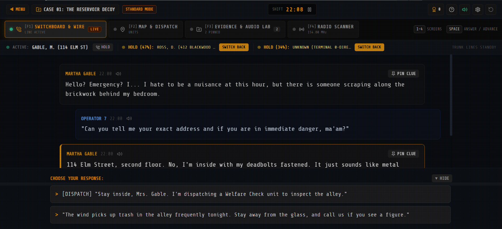

Two callers.
One radio echo.
Don't trust your ears.
It's 2:14 AM. You're Operator 7 on a humming 1994 switchboard. Callers lie, misremember, or repeat what they heard on the radio. Listen to what's behind their voices, compare the tapes, and decide who's telling the truth.
Free · runs in your browser · works offline · best with headphones

Pick up the line.
This is the whole game in thirty seconds: a caller says one thing, the room tone says another. Put on headphones and answer.
[02:14:08 · LINE 1] "I swear I heard a cruiser scream past Millbrook Bridge… wait, why is my neighbor's porch radio playing the exact same static?"
Four screens. No hand-holding.
Switch with F1–F4 or 1–4, just like the game.
Juggle callers without contaminating them.
- Answer a new line and the active caller goes on hold, with a SWITCH BACK button and a live agitation percentage.
- Leading questions taint testimony, so ask neutral ones.
- Hit PIN CLUE on anything a caller says. Pinned clues carry over to the evidence lab.
shots/f1.png
Send units. Test alibis.
- Dispatch cruisers, fire engines or a roadblock from the 1994 county map.
- Field radio reports come back on a timer, and they can break a story.
- Units are limited, so every dispatch costs you something.
 Screenshot slot
Screenshot slotshots/f2.png
Stamp your evidence. Question your theory.
- Mark each clue Firsthand, Hearsay Echo or Assumption.
- Load two tapes into the dual-deck scope to find shared broadcast bleed.
- Before you file, you must attach evidence against your own verdict.
 Screenshot slot
Screenshot slotshots/f3.png
Tune through the static.
- Sheriff dispatch, CB channel 19, NOAA weather and a courthouse repeater.
- Hardcore mode: you must fine-tune the dial by hand.
- Intercepts drop straight into the A/B lab.
 Screenshot slot
Screenshot slotshots/f4.png
Same case. Three ways to hurt.
Pick a protocol and watch the desk change.
Built on five ways your brain gets it wrong.
Most detective games ask you to spot the lie. Dead Air asks how you reached your conclusion, then grades that too.
You'll want your first suspect to be right.
Form 911-B won't let you file until you attach evidence that argues against yourself.
Say how sure you are.
Declare 50%, 75% or 95% before you file. Be wrong at 95% and it costs you.
Too many lines ringing.
Callers wait on hold, power surges trip the breaker, and you have to triage.
Who actually saw it?
Caller B may just be repeating the scanner Caller A had on in the kitchen.
You hear words, not the room.
The hum, the flat-pitch siren and the missing Doppler shift were there the whole time.
The Psychological Debrief
A five-part breakdown of what you heard, what you assumed, and where your reasoning cracked.
10 shifts. One county cover-up.
Tap a tape for the setup. No spoilers.
TAPE 01OCT 14, 94The Reservoir Decoy
A staged emergency pulls cruisers away from something else entirely.
TAPE 02NOV 02, 94Blackout at Mile 40
A blizzard, a jackknifed truck, and a trooper whose story doesn't match the caller's.
TAPE 03DEC 31, 94The Midnight Frequency
Fifteen minutes to New Year's. Someone has taken over the transmitter tower.
TAPE 04NOV 02, 94The West Cage
An acoustic mismatch inside a locked county holding annex.
TAPE 05NOV 06, 94The Last Broadcast
A late-night DJ is on air when the transmitter room goes dark.
TAPE 06NOV 04, 94Last Call at Bellweather
Three callers agree on a double shooting. Do you trust what you think you heard?
TAPE 07NOV 11, 94The Clock That Wasn't There
A judge describes an intruder and a chiming grandfather clock. Something about the chime is off.
TAPE 08NOV 18, 94Echo Chamber at Petrol 9
One explosion, or two? Three witnesses, and not all of them saw it.
TAPE 09NOV 25, 94The Phantom Siren at Crossing 4
A stalled bus, freezing fog, and a siren that doesn't behave like one.
TAPE 10NOV 30, 94Dead Air on Trunk Zero
Midnight finale. An Internal Affairs manhunt, a former dispatcher, and the night the annex burned.
For the engineers.
Dead Air is a React 18 + TypeScript + Zustand app with a hand-built Web Audio engine. Every sound effect is generated in code, and it installs as an offline PWA.
The 4-page case study covers session-fenced audio, the A/B carrier-correlation engine, single-source difficulty modes, and four real bugs, with how each one was fixed.
Put on headphones.
Your shift starts now.
No account. No download. Just 1994 and a ringing phone.